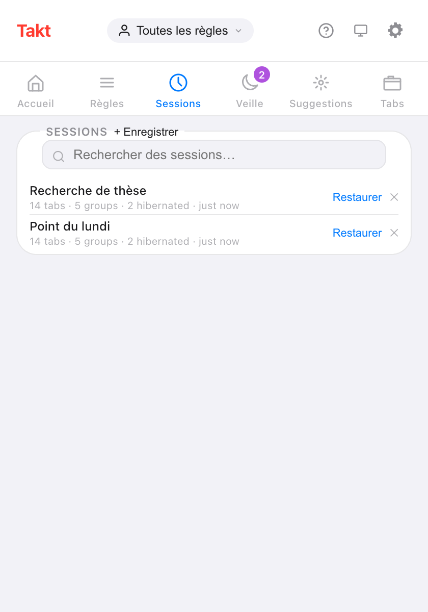
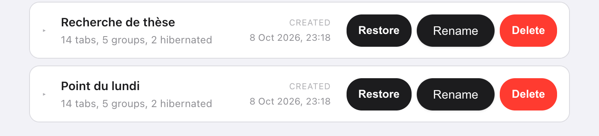

En bref : dans le popup de Takt, ouvrez Sessions, cliquez sur + Enregistrer, donnez un nom, et choisissez Cette fenêtre ou Toutes les fenêtres. Plus tard, cliquez sur Restaurer pour retrouver les mêmes onglets, dans les mêmes groupes nommés et colorés.
- Enregistre chaque onglet, chaque groupe (nom, couleur, état replié), les onglets isolés et votre liste Veille.
- Restaurez dans une nouvelle fenêtre, ou à la place de la fenêtre actuelle.
- Jusqu'à 50 sessions, stockées sur votre machine. Premium
Pourquoi « Continue where you left off » de Chrome ne suffit-il pas ?
Pour un seul usage, il suffit. Activez-le et Chrome rouvre au démarrage les onglets de votre dernière session. Si c'est tout ce qu'il vous faut, vous n'avez pas besoin d'extension.
Ça ne tient plus quand vous passez d'un travail à l'autre. Les onglets de votre mémoire, ceux de votre réunion du lundi et ceux de l'organisation de votre voyage ne peuvent pas tous être « la dernière session ». Fermez la fenêtre du mémoire pour faire de la place à la réunion, et ses onglets disparaissent de cette liste.
Une session nommée, c'est un favori pour tout un espace de travail. Vous fermez la fenêtre sans inquiétude, car vous pouvez la rouvrir par son nom.
Comment enregistrer une session d'onglets ?
- Installez Takt depuis le Chrome Web Store.
- Ouvrez le popup et allez dans le volet Sessions.
- Cliquez sur + Enregistrer et tapez un nom de 60 caractères au maximum. Chaque nom doit être unique.
- Choisissez Cette fenêtre (par défaut) ou Toutes les fenêtres, puis cliquez sur Enregistrer.

Que contient une session ?
| Enregistré | Détails |
|---|---|
| Onglets | URL et titre de chaque onglet |
| Groupes d'onglets | Nom, couleur, état replié, et les onglets de chaque groupe |
| Onglets isolés | Les onglets hors de tout groupe |
| Fenêtres | Une fenêtre, ou toutes les fenêtres normales avec Toutes les fenêtres |
| Onglets en hibernation | Votre liste Veille, rétablie lors de la restauration |
Chrome ne permet pas aux extensions d'ouvrir les pages chrome://, about: ou d'extension : ces onglets sont donc ignorés.
Comment restaurer une session ?
Cliquez sur Restaurer. Une boîte de dialogue propose deux modes :
- Ouvrir dans une nouvelle fenêtre. Votre fenêtre actuelle reste telle quelle.
- Remplacer la fenêtre actuelle. Les onglets enregistrés s'ouvrent dans la fenêtre actuelle, puis les onglets qui s'y trouvaient se ferment.
La boîte de dialogue affiche un compte à rebours de 7 secondes, puis restaure avec le mode sélectionné. Cliquez sur Restaurer dans la boîte de dialogue pour ne pas attendre, ou sur Annuler. Dans une session à plusieurs fenêtres, la première fenêtre suit votre choix et toutes les autres s'ouvrent dans de nouvelles fenêtres.
Puis-je renommer les sessions ou les enregistrer automatiquement ?
Oui, dans les deux cas.
- Renommer : double-cliquez sur un nom dans le popup, ou utilisez Rename dans l'onglet Sessions de la page d'options. Appuyez sur Entrée pour enregistrer.
- Sauvegarde automatique : activez Sauvegarde automatique à la fermeture dans Settings. Fermer une fenêtre enregistre ses onglets dans une session nommée « Sauvegarde auto » suivi de la date et de l'heure.
La page d'options permet aussi de déplier une session pour voir chacun de ses groupes et onglets avant de la restaurer.

Sessions Takt ou options intégrées de Chrome
| « Continue where you left off » de Chrome | Sessions Takt | |
|---|---|---|
| Combien | La dernière session | Jusqu'à 50, nommées |
| Ce qui est conservé | Les onglets ouverts la dernière fois | Tout instantané que vous avez enregistré, ou une sauvegarde automatique à la fermeture d'une fenêtre |
| Quand la restauration a lieu | Au démarrage de Chrome | Dès que vous cliquez sur Restaurer |
| Coût | Gratuit, intégré | Premium |
Ce que les sessions ne font pas
- Elles restent sur cet ordinateur. Les sessions se trouvent dans le stockage local de Chrome et ne suivent pas votre compte Google. Pour les transférer, utilisez une sauvegarde ou la synchronisation.
- Ce sont des instantanés. Une session enregistrée ne change pas quand vous modifiez la fenêtre. Enregistrez de nouveau sous un autre nom pour garder une version plus récente.
- 50, c'est le maximum. Supprimez les anciennes pour faire de la place. Les sauvegardes automatiques remplacent la plus ancienne sauvegarde automatique, jamais une session que vous avez nommée.
- Pas d'état de page. La restauration rouvre les URL. Le contenu des formulaires et les positions de défilement ne sont pas enregistrés.
Fermez la fenêtre. Gardez le travail.
Ajouter Takt à Chrome, gratuitementQuestions fréquentes
Chrome enregistre-t-il les sessions d'onglets tout seul ?
« Continue where you left off » rouvre votre dernière session au démarrage de Chrome. Il garde cette seule session, pas une liste d'instantanés nommés.
Combien de sessions puis-je enregistrer dans Takt ?
Jusqu'à 50. Quand la liste est pleine, supprimez d'abord une ancienne session. Les sauvegardes automatiques font de la place en remplaçant la plus ancienne sauvegarde automatique.
Les sessions d'onglets sont-elles gratuites dans Takt ?
Non. Enregistrer, restaurer, renommer et sauvegarder automatiquement font partie de Premium (3 $/mois ou 30 $/an). Avec le plan Free, vous pouvez voir la liste des sessions enregistrées.
Mes sessions sont-elles envoyées quelque part ?
Non. Elles sont stockées dans le stockage local de Chrome, sur votre ordinateur. Elles n'en sortent que si vous exportez une sauvegarde ou activez File Sync ou Drive Sync. Voir comment Takt garde vos données en local.